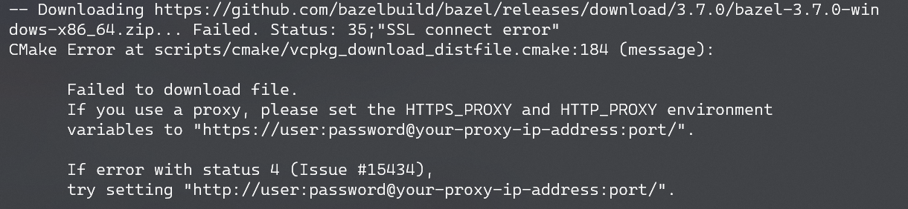

C++ 包管理器 vcpkg 的安装使用
本文最后更新于：2022年3月23日 晚上
简述
Vcpkg 是适用于 C 和 C++ 库的跨平台命令行包管理器。我个人的理解就类似于 Python 的 pip ，可以很方便的下载安装一些第三方的库。
本文仅简要记录我个人在 Windows 平台下的安装使用过程，更多内容请查阅官方文档：https://docs.microsoft.com/zh-cn/cpp/build/vcpkg?view=msvc-160
安装
首先确保 Windows 系统已安装 Git ，将 vcpkg 仓库克隆到本地，并执行根目录下的 bootstrap-vcpkg.bat 脚本。
git clone https://github.com/microsoft/vcpkg
.\vcpkg\bootstrap-vcpkg.bat这就安装好了，但一般在 Windows 上都是使用 Visual Studio 进行开发，这里需要注意 Visual Studio 一定要安装英文语言包！
为了更好的搭配 Visual Studio 使用，还需要执行以下命令（需要管理员权限）：
.\vcpkg\vcpkg integrate install
.\vcpkg\vcpkg integrate remove # 上一行的逆操作到这里，就可以很无痛的通过 vcpkg 安装第三方库并直接在 Visual Studio 中 #include 相关的库，可以说真的超级方便！
进一步可以将 vcpkg 的路径添加到环境变量中，这样就可以在任意位置直接执行 vcpkg 指令了~
常用命令
1. 已安装的库
vcpkg list2. 搜索库
vcpkg search [search term]3. 安装库
vcpkg install [packages to install]安装库可以指定目标平台：x86-windows、x64-linux.cmake 或 x64-osx.cmake。例如：
vcpkg install boost:x86-windows通过 vcpkg 安装库会自动安装依赖的库，所以无需担心依赖问题。
通过以下命令可以查看当前支持的目标平台：
vcpkg help triplet4. 更新/升级库
要更新本地库首先需要拉取最新的版本信息文件：
git pull然后通过以下命令查看本地库是否过期：
vcpkg update更新库：
vcpkg upgrade --no-dry-run升级选项：
--no-dry-run：执行升级；若未指定，该命令将仅列出过期的包。--keep-going：继续安装包（即使某项失败）。--triplet <t>：为非限定的包设置默认的三元组。--vcpkg-root <path>：指定要使用的 vcpkg 目录，而不是使用当前目录或工具目录。
5. 删除库
vcpkg remove [packages to remove]如果有其他库依赖它，系统会提示你使用 --recurse 重新运行命令；重新运行会导致下游的所有库都被删除。
常见问题
1. 下载速度慢或无法下载
下载速度慢的原因是可想而知的，如果条件允许的话可以通过对 Power Shell 设置代理解决。

这里提供临时代理的方法（个人认为设置永久代理不是很必要），在 Power Shell 中执行以下两行命令（注意美元符合也是命令的一部分）立即生效，关闭终端后失效。
$env:HTTP_PROXY="localhost:[port]"
$env:HTTPS_PROXY="localhost:[port]"2. 是否可以删除 downloads 和 buildtrees 文件夹？
首先为什么要删除这两个目录，因为没啥用还特别占空间，比如我装 TensorFlow 的时候，buildtrees 目录下的 tensorflow-cc 文件夹直接占用了超过 60G 的空间😅
至于可不可以删除，答案是：可以放心的删！
参考 GitHub 的回答：https://github.com/microsoft/vcpkg/issues/2538
downloads 目录是用来保存下载的包的，比如说第一次安装某个包失败了，但它已经下载到 downloads 目录下，所以重新安装的时候就不用再下载一次了。
而 buildtrees 主要是编译过程中产生的一些文件，以 GitHub 的回答来说这两个目录的作用就是调试找问题，因此当某个包已经成功安装后，这两个目录就可以放心的删除了。
不难发现，安装的包最终都位于 installed 目录下！